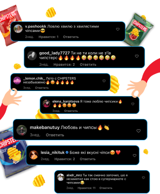
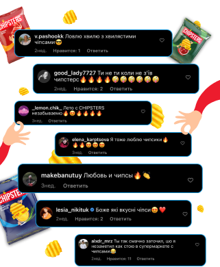

Chipsters
Хвиля Chipsters
Завдання:
розробити та реалізувати креативну комунікацію з блогерами, присвячену запуску нової лінійки рифлених Chipster's.
Літо завжди починається зненацька й закінчується невчасно, тому ми
вирішили продовжити його з новими рифленими Chipster's. Кампанія
була запланована на вересень — саме час, щоби підбити підсумки
літа 2021 року.
Було важливо зберегти це позиціонування і вигадати яскраву
кампанію з блогерами, де вони нативно розкажуть про рифлену
новинку Chipster's. Для цього вирішили використати комунікацію з
блогерами на максимум: у стрічці запустити відеопости, у яких вони
переносяться в легендарне літо 2021, зробивши один кусь хвилястих
Chipster's. А в сторіс — відео із чіловими прогнозами на
осінь-2021 на основі нових уподобань Chipster's.
Тому що літо було по-справжньому легендарним! І якщо здається, що
за 3 місяці нічого не сталося, варто зайти до галереї телефону та
подивитися, скільки крутих моментів вдалося зафіксувати та
запам’ятати назавжди. А після цього — продовжити відчуття та
пірнути в осінь із новими планами.
Завдяки такому підходу блогери були максимально залучені до
створення постів, тому що вони ділилися з авдиторією справжніми
емоціями.
Тому що для крутого результату недостатньо надіслати блогеру ТЗ та
забути про нього до моменту підготовки звіту. Найкращий показник
того, що кампанія пройшла успішно, — це реакція авдиторії. Варто
визнати, що літо та хвилясті Chipster's стали ідеальним метчем.
 

Результати кампанії лише підтвердили цей факт: інтерактивні сторіс та ностальгічні пости від блогерів охопили 3,5 мільйона глядачів, а понад 250 тисяч долучилися до комунікації: лайкнули пост, прокоментували, зберегли чи залишили реакцію на сторіс.